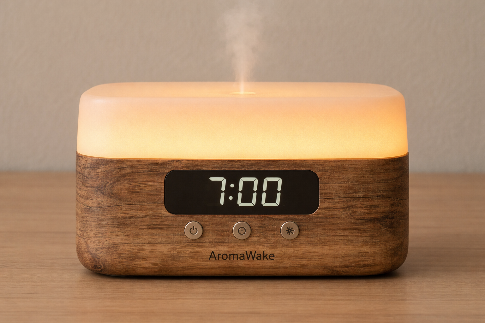

Despertador AromaWake

O AromaWake é um despertador inovador que utiliza aromas agradáveis para proporcionar um despertar suave e revigorante. Em vez de um alarme sonoro tradicional, o AromaWake libera fragrâncias selecionadas que ajudam a despertar os sentidos de forma natural.
Características Principais:
- Liberação de Aromas: O AromaWake possui compartimentos para diferentes essências, permitindo que os usuários escolham o aroma que desejam para o despertar.
- Configuração Personalizada: Os usuários podem programar o horário de despertar e a intensidade do aroma, proporcionando uma experiência personalizada.
- Design Elegante: Com um design moderno e compacto, o AromaWake se encaixa perfeitamente em qualquer ambiente de quarto.
- Função de Soneca: Para aqueles que desejam mais alguns minutos de descanso, o AromaWake oferece uma função de soneca que libera um aroma suave para ajudar a relaxar.